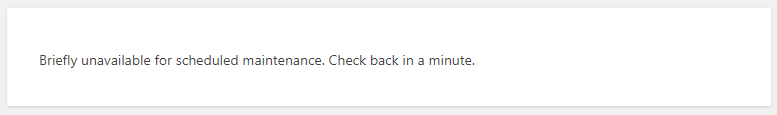

阿航在更新WordPress插件时, 插件更新失败并返回了504错误. 并且再次访问网站时, 网站提示Briefly unavailable for scheduled maintenance. Check back in a minute.好郁闷… 折腾了一下终于搞定. 本篇文章就来记录下如何解决该问题.
情景再现
先来看下阿航的报错, 是不是和你一样?

解决方案
方案一: 耐心等待
遇到此种情况, 最好的解决方案就是等. 因为WordPress在更新插件/主题时, 会暂停网站访问, 内部自动更新. 一般来讲, 耐心等待一段时间, 此报错就会自动解除.
如果等待无效, 请查看下面的方法.
方案二: 删除 .maintenance
在WordPress进行更新/维护时, 会在目录下创建一个 .maintenance 文件. 当更新/维护结束时, 会自动删除它.
所以我们只要手动删除即可解除更新/维护模式.
进入WordPress安装目录, 找到.maintenance文件, 删除即可:

再次刷新网站, 查看最终效果.
感谢
wordpress更新出现Briefly unavailable for scheduled maintenance. Check back in a minute.